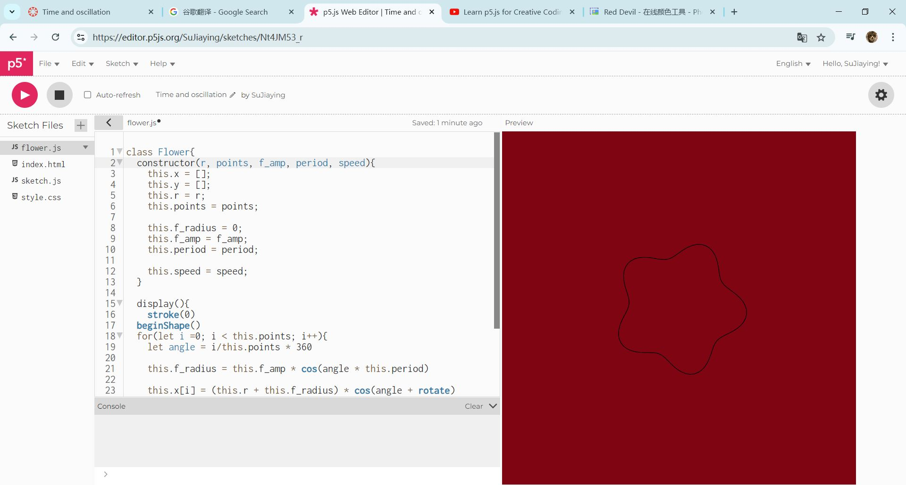

1. Draw a shape in the center.
2. Use sin and cos function to create wavy patterns.

3. Add a new javascript to create a bunch of flowers.
4. Select the "DIFFERENT" blend mode.
5. Add a for loop to make the flowers rotate
6. Add a small circle that moves randomly over time based on the circular track.